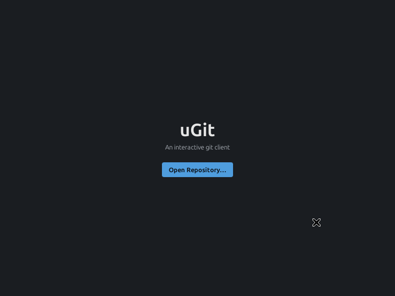
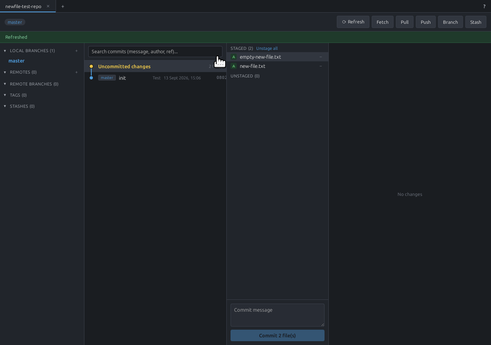
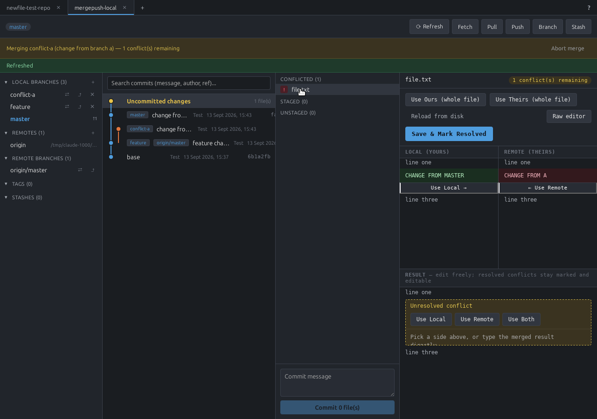

uGit is a visual desktop client for Git. This manual walks through everyday use: opening a repository, staging and committing, branching, merging and resolving conflicts, working with remotes and GitHub, and the smaller conveniences that make it comfortable to use day to day.
For installation instructions, see the README. This manual assumes uGit is already installed and covers using the app itself.
Getting started
When you launch uGit with no repository open yet, you'll see the welcome screen:

From here you can:
- Open Repository… — browse to an existing local git repository and open it.
- New Repository… — create a brand-new local repository in a folder you choose.
- Clone from GitHub… — sign in to GitHub and pick one of your repos to clone locally.
- Sign in to GitHub… — appears once you're not already signed in; connects your GitHub account so cloning, pushing, and pulling private/SSH-restricted repos work smoothly (see GitHub integration).
Once a repository is open, it appears as a tab at the top of the window. You can open several repositories at once — each gets its own tab and keeps its own state (see Working with multiple repositories).
The main window
Once a repository is open, the window is divided into a few areas:
- Sidebar (left) — local branches, remotes, remote-tracking branches, tags, and stashes. Click a branch to check it out; click a remote-tracking branch to jump the commit list to it.
- Commit list (center-left) — "Uncommitted changes" at the top (if there are any), followed by the commit history as a colored graph, one lane per line of development. Click any row to view that commit's details on the right.
- Details panel (right) — for "Uncommitted changes", this shows staging controls and diffs (see Staging and committing); for a historical commit, it shows the files that commit changed and their diffs.
- Toolbar (top right) — Fetch, Pull, Push, Branch, Stash, and (per-repo) Switch repo/close.
The current branch's name is shown next to the repo tab. A status banner appears just below the toolbar after actions that change repository state (e.g. "Pushed", "Fast-forwarded to feature", or a merge/conflict notice), and clears on the next refresh.
Staging and committing
Selecting Uncommitted changes shows two lists — Staged and Unstaged — and a diff panel:

- Click a file to preview its diff (or, for a brand-new file, its full contents).
- Click the
+/−next to a file to stage or unstage just that file, or use Stage all / Unstage all for everything at once. - To discard unstaged changes to a file entirely, use its discard control in the unstaged list — this cannot be undone, so uGit will ask you to confirm.
- Type a commit message in the box at the bottom and click Commit N file(s) (only enabled once at least one file is staged and the message isn't empty).
A newly added empty file shows "Empty file added" rather than a blank/confusing diff, and a deleted-to-empty file shows "Empty file deleted" — these distinguish "nothing to show because the file has no content" from "nothing to show because nothing changed."
Branching
Use the Branch button in the toolbar to create a new branch from the currently selected commit (or the current HEAD if nothing else is selected).
In the sidebar, under Local Branches and Remote Branches:
- Click a branch name to check it out (local) or jump to it in the commit list (remote).
- Local branches show ahead/behind counts against their upstream, when one is configured.
- Use the icons next to a branch to rename, delete, or (for remotes) fetch just that branch.
Merging and rebasing
Right-click a branch (or use the action available from a selected commit) to merge or rebase it
into your current branch. uGit performs a real merge/rebase via git2 and reports the result in
the status banner:
- A fast-forward merge just moves the branch pointer and says so ("Fast-forwarded to
<branch>"). - A merge that needs a real merge commit stages the result and waits for you to commit it, same as staging any other change.
- A merge or rebase that hits conflicting changes puts the repository into a conflict state — see the next section.
Resolving conflicts
When a merge or rebase can't be resolved automatically, uGit shows a status banner naming the
conflict (e.g. "Merging conflict-a (change from branch a) — 1 conflict(s) remaining") and lists
the conflicted file(s) in the details panel. Selecting a conflicted file opens the merge tool:

The merge tool has three parts:
- Local (yours) and Remote (theirs) — read-only reference panes showing each side's version of the file, side by side.
- Result — an editable pane below, pre-populated with the file as git left it (conflict markers included). Long unchanged stretches of the file collapse automatically so you can focus on what actually differs; click a collapsed block to expand it again.
For each conflicting region, buttons let you resolve it directly:
- Use Ours (whole file) / Use Theirs (whole file) — resolve the entire file to one side in one click.
- Use Local / Use Remote (per-region) — take just this region from one side.
- Use Local / Use Remote / Use Both (in the Result pane) — pick a side for this specific conflict, or keep both and edit the combination by hand.
You can also just type directly in the Result pane — it's a normal editable text area. Resolved conflicts stay visibly marked (so you can see at a glance what you already handled) but remain editable if you change your mind.
Once every conflict in a file is resolved, click Save & Mark Resolved. When every conflicted file in the merge is resolved, the commit box at the bottom becomes available — write a message and commit to complete the merge. If you want to back out entirely, use Abort merge in the status banner instead.
Other useful controls in the merge tool:
- Reload from disk — if you edited the file outside uGit, reload to pick up those changes.
- Raw editor — switch to editing the file's raw text directly, conflict markers and all, for cases the guided tool doesn't fit well.
Resetting a branch
To move the current branch pointer to an earlier commit, select that commit and choose Reset branch here, then pick a mode:
- Soft — moves the branch pointer only; all changes since that commit stay staged.
- Mixed — moves the branch pointer and unstages those changes (they remain in the working directory).
- Hard — moves the branch pointer and discards those changes entirely. uGit will ask you to confirm, since this cannot be undone.
Stashing
Use Stash in the toolbar to save your current uncommitted changes and return to a clean working directory. Saved stashes appear under Stashes in the sidebar, where you can:
- Apply — reapply a stash's changes without removing it from the stash list.
- Pop — reapply a stash's changes and remove it from the list.
- Drop — delete a stash without applying it.
Remotes: fetch, pull, push
Fetch, Pull, and Push in the toolbar act on the current branch's configured remote
and upstream. uGit tries authentication methods in this order: SSH agent, ~/.ssh keys, then the
system git credential helper.
If an SSH-based remote (for example, one originally set up by another tool like GitKraken) fails,
uGit automatically retries the same operation over HTTPS using a signed-in GitHub account — see
GitHub integration below. This fallback never modifies the repository's
actual configured remote (checked via git remote -v or another tool, it will look untouched),
so other tools reading the same repository are unaffected.
To add a new remote, use the + control under Remotes in the sidebar.
SSH key management
Click the ? in the top-right corner, then Set up an SSH key for GitHub → Manage SSH
keys… to open the SSH keys panel. It shows which of uGit's default-searched key names
(id_ed25519, id_rsa, id_ecdsa) already exist in ~/.ssh, plus any custom key you've
configured.
- Generate new key — creates a new Ed25519 keypair (pure Rust, no dependency on an external
ssh-keygenbinary) under a name that can never collide with an existing key, and sets it as the active key immediately. Shows the public key ready to copy, plus a button straight to GitHub's "Add new SSH key" page. Only the public key ever leaves the app — you paste it into GitHub yourself, so this never needs any elevated GitHub permission. - Use existing key… — point uGit at any private key file via a file picker (opens directly
inside
~/.ssh, since native pickers hide dot-folders by default), overriding the default filename search. - Test connection — checks SSH auth against GitHub via the system
sshbinary (ssh -T git@github.com), a completely separate process from anything OAuth-related, so a signed-in GitHub account can never mask a real SSH problem here. Tests your configured custom key specifically if one is set; otherwise letssshresolve normally (agent, config, default files). Shows GitHub's own response text directly.
Securing SSH keys on Windows
Windows' OpenSSH client checks a private key file's NTFS permissions, not Unix-style permission bits — if anyone other than you (SYSTEM/Administrators are exempted) can read it, it's silently rejected with something like "Permissions ... are too open. This private key will be ignored." A key just written to disk usually inherits its folder's permissions, which are typically too open, so this can affect a key you created manually, copied from another machine, or generated with a uGit version older than 0.1.10 (from 0.1.10 on, uGit fixes this automatically for keys it generates).
PowerShell — replace the path with your key's:
icacls "C:\path\to\your\key" /inheritance:r
icacls "C:\path\to\your\key" /grant:r "$($env:USERNAME):(R)"
The first command strips inherited permissions (usually the source of the problem); the second
grants read access to just your own account. Target the private key file itself (no .pub
extension) — the public key's permissions don't matter.
Or, using File Explorer: right-click the key file → Properties → Security tab → Advanced → Disable inheritance → "Remove all inherited permissions from this object" → then add an entry granting only your own user account Read access.
To verify it worked: point Manage SSH keys… → Use existing key… at the file, then click
Test connection — or run ssh -T git@github.com -i "C:\path\to\your\key" directly. If it's
still rejected, the error names the exact problem.
GitHub integration
uGit can sign in to GitHub using its Device Flow — no password is ever typed into uGit, and the resulting token is stored in your OS's secure keychain (Secret Service on Linux, Credential Manager on Windows), not in a plain file.
You can sign in proactively from the welcome screen (Sign in to GitHub…), or let uGit prompt you automatically: if a fetch, pull, or push fails specifically because it needs GitHub credentials you don't have yet, uGit opens the same sign-in flow right there and automatically retries the action once you're signed in — no need to click Push again yourself.
Once signed in, you can also:
- Clone from GitHub… on the welcome screen — browse and clone any of your repos.
- Create on GitHub… (from a local repository without a remote yet) — creates a matching GitHub repository and pushes your local history to it in one step.
Working with multiple repositories
Each repository you open gets its own tab at the top of the window. Switching tabs is instant and never loses in-progress work — a half-typed commit message, a partially resolved merge, a selected commit, all stay exactly as you left them when you switch back. Use the + next to the tabs to open another repository, and the × on a tab to close it.
Searching commit history
Use the search box above the commit list to search by commit message, author name, or a branch/tag reference name. Matches are highlighted in the list as you type, with a live match count and Next/Prev buttons to jump between them.
Session memory
uGit remembers state between launches so you can pick up where you left off:
- The repositories you had open as tabs, and which tab was active, reopen automatically.
- The last folder you browsed to in the Open/New Repository dialog is remembered.
- The window's size and position are restored.
Built-in help
Click the ? in the top-right corner of the window to open the Help panel. It covers things a GUI client would otherwise leave you to puzzle out yourself:
- Setting up SSH (including multiple accounts/keys).
- Creating a brand-new local repository.
- Linking a local repository to an existing remote.
- Creating a new remote (on GitHub) from a local repository.
The last two topics have real buttons behind them, not just instructions — using them performs the action directly. The Help panel footer also shows the running app version and a link to the project's GitHub repository.
Troubleshooting
Fetch/Pull/Push hangs or fails with an authentication error.
Make sure your SSH agent has the right key loaded (ssh-add -l), or sign in to GitHub via
Sign in to GitHub… so the HTTPS fallback can take over automatically.
A remote-tracking branch (e.g. origin/main) looks behind even though you just pushed.
Click Refresh (or Fetch) — uGit updates local tracking refs after a successful push, but
a manual refresh always reflects the latest known state.
Windows: the app won't start, or shows a blank window. uGit needs the Microsoft Edge WebView2 runtime, which ships preinstalled on Windows 11 and up-to-date Windows 10. See the README's Windows section for details.
A merge conflict file looks confusing. Use Reload from disk if you've been editing the file outside uGit, or switch to the Raw editor to work with the conflict markers directly instead of the guided panes.
If something still doesn't look right, check the CHANGELOG for known recent fixes, or open an issue on the project's GitHub repository (linked in the Help panel).